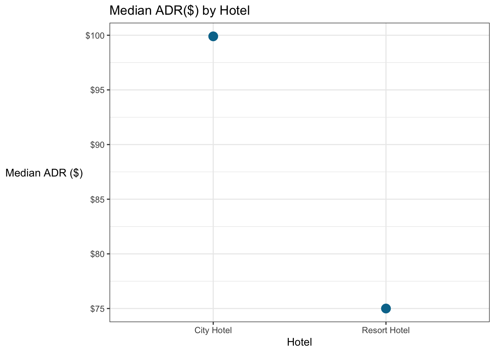

5 R and the Tidyverse

5.1 Using R and the Tidyverse
This course is not a comprehensive introduction to R for Data Science (there are many excellent resources online, as well as great “bootcamps”). But we need to have a basic understanding of how R works and how to use some of the data manipulation (“wrangling”) tools.
5.2 Basic Commands
5.2.2 Storing objects
You can either use the “assignment operator” <- or the equals sign = when you want to assign a value/data to a variable. There are very slight differences in how they work (specifically, the order in which they will be parsed) but these are of little practical significance.
### Demonstrate two ways of assigning values to variables
# First use assignment operator
x <- 2
print(x)## [1] 2# Then use the equal sign
y = 3
print(y)## [1] 3Stylistically, I recommend the assignment operator, but you may see the equal sign when looking at some help files.
The “double equal sign” == is used to test whether two things are equal (which we’ll talk about later).
5.3 Saving and Loading in Data
I won’t go into detail here, but there is lots of information available on the readr package which lets you import/export data into/from R. There are also Base R functions (which are a little slower and less intuitive) and data.table functions (which are faster but less intuitive). Personally, I use readr.
5.3.1 .csv (Comma Separated Values)
Data is often stored as text separated by commas. You’ve probably downloaded one of these files before, and if you just double click on it, your computer will probably try to open it with Excel or Numbers. We can read these files into R using the read_csv command from the readr package (included in the tidyverse).
# Make sure you loaded the tidyverse
# Read in booking data, note we have to "put" it somewhere
booking_data <- read_csv("hotel_bookings.csv")## Parsed with column specification:
## cols(
## .default = col_double(),
## hotel = col_character(),
## arrival_date_month = col_character(),
## meal = col_character(),
## country = col_character(),
## market_segment = col_character(),
## reserved_room_type = col_character(),
## assigned_room_type = col_character(),
## deposit_type = col_character(),
## agent = col_character(),
## reservation_status = col_character()
## )## See spec(...) for full column specifications.If we’ve manipulated the data and want to save it, send it to a colleague, or perhaps analyze it in another program, we might want to save the “new” file back as a .csv.
We can do that with the write_csv command.
5.3.2 .rds (R Data File)
Another data format we’ll see in this class is the .rds file. This is R’s native data format. We use the read_rds command. Loading tends to be very fast (much faster than a .csv). These files can also be much smaller than CSV files.
PCard <- read_rds("SanJosePCardTransactions")If we need to save the file, we do that with the write_rds command.
5.3.3 Long vs Wide Data
In this course, you will be provided with data that has (mostly) been scrubbed for you and is already in a “long” format. Most analysis (e.g. plotting, regression) works best on long data, but we often present tables in wide format because a long table is hard for a human to interpret.
Long data has one “observation” on each row. This is often the most intuitive way to record data. Consider the hotel booking data…how else would we present it beside one booking per row?!
| hotel | arrival_date | adr | market_segment |
|---|---|---|---|
| Resort Hotel | 2015-07-01 | 98.0 | Online TA |
| Resort Hotel | 2015-07-01 | 98.0 | Online TA |
| Resort Hotel | 2015-07-01 | 107.0 | Direct |
| Resort Hotel | 2015-07-01 | 103.0 | Direct |
| Resort Hotel | 2015-07-01 | 82.0 | Online TA |
| Resort Hotel | 2015-07-01 | 105.5 | Offline TA/TO |
But sometimes we consolidate data. Or you might receive data that is aggregated in some way for you already. Let’s say we were looking at the total bookings per month by hotel…the hotels might be the rows and the months might be the columns.
| hotel | August | September |
|---|---|---|
| City Hotel | 5381 | 4290 |
| Resort Hotel | 3257 | 2102 |
This data is in wide format and while it’s easy to read, it’s not ideal for plotting or regression. Notice that each row is no longer one “observation” (where an observation is the number of stays at a given hotel in a month). Each row has three observations…the number of stays in each hotel for July, for August, and for September.
| arrival_date_month | City Hotel | Resort Hotel |
|---|---|---|
| Aug | 5381 | 3257 |
| Sep | 4290 | 2102 |
How about now? No, still wide format, just in a different way.
| hotel | arrival_date_month | Total_bookings |
|---|---|---|
| City Hotel | August | 5381 |
| City Hotel | September | 4290 |
| Resort Hotel | August | 3257 |
| Resort Hotel | September | 2102 |
Here we go…long data ready for analysis. Harder for a human to interpret, though!
5.4 The Pipe Operator
The “pipe operator” %>% is one of the handiest function in R. It takes whatever comes on the left and “passes it” as the first argument to the function on the right. Why might that be helpful? Let’s look at an example of what happens when we don’t use the pipe.
Let’s say we want to find the mean daily rate adr (and the min and the max) for guests at the City Hotel from Great Britain (GBR), Ireland (IRL), the US (USA), or Spain (ESP).
### Mean ADR by country for ONLY City Hotel
# Without pipe operator
summarise(group_by(filter(booking_data, hotel == "City Hotel", country %in% c("GBR", "USA", "IRL", "ESP")), country), Mean_ADR = mean(adr))## # A tibble: 4 x 2
## country Mean_ADR
## * <chr> <dbl>
## 1 ESP 114.
## 2 GBR 115.
## 3 IRL 116.
## 4 USA 120.This works but…wow is it confusing. We have to summarise something that we grouped, that was filtered, that started as the booking_data. One thing is nested inside another.
Try it with the pipe. We take the booking_data, filter it, then group it, and finally summarize it. With the pipe, the code matches our thought process and it’s much easier to debug.
# With pipe operator
booking_data %>%
filter(hotel == "City Hotel", country %in% c("GBR", "USA", "IRL", "ESP")) %>%
group_by(country) %>%
summarise(Mean_ADR = mean(adr))## # A tibble: 4 x 2
## country Mean_ADR
## * <chr> <dbl>
## 1 ESP 114.
## 2 GBR 115.
## 3 IRL 116.
## 4 USA 120.5.5 Logicals and Filtering the Data
5.5.1 Equal, Greater, Less Than
Logical tests are very useful in data analysis. We might only want to display hotel bookings with an adr greater than $60, or after the year 2016, etc.
### Test for equality (whether two things are the same) with double equal sign
# Does 2 equal 2? Should be true
2 == 2## [1] TRUE# Is "New Zealand" the same as "New Zealand"? Should be true
"New Zealand" == "New Zealand"## [1] TRUE### Similarly, use greater, less than, greater than or equal to etc...
# Is 3 greater than 4 (FALSE)
3 > 4## [1] FALSE# Is 7 less than 6 (FALSE)
7 < 6## [1] FALSE# Apply less than or equal to operator to a vector of values
# We'll get a vector of answers; TRUE for 1 through 3, FALSE otherwise
test_values <- c(1, 2, 3, 4, 5, 6)
test_values <= 3## [1] TRUE TRUE TRUE FALSE FALSE FALSE# between(x, a, b) is the same as "a <= x <= b"
# The pipe makes it a little easier to read
test_values %>% between(2, 4)## [1] FALSE TRUE TRUE TRUE FALSE FALSE5.5.2 Filter dataset
A common application of these logical tests is to decide which rows (observations) to include in an analysis or a visualization.
The filter command from the dplyr package (part of the tidyverse) is very handy for this. It will filter based on the values of one or more variables. Here are some examples of how to apply it.
### First, lets count the number of rows in the booking_data set
# The nrow function does this for us
nrow(booking_data)## [1] 119390# And how many came from each hotel?
table(booking_data$hotel)##
## City Hotel Resort Hotel
## 79330 40060# Filter the booking_data to only include bookings at the City Hotel
# Check how many rows are in the result.
booking_data %>%
filter(hotel == "City Hotel") %>%
nrow()## [1] 79330# Alternatively, we could exclude the Resort Hotel with the "not equal" operator "!="
booking_data %>%
filter(hotel != "Resort Hotel") %>%
nrow()## [1] 79330Normally, we will put something “after” the filter command, like passing the result on to ggplot to plot it. If we don’t, we’ll just get the filtered dataframe or vector. Let’s see that.
### Display a table after filtering it
# First, create a tibble (an "enhanced" dataframe)
test <- tibble(id = c(1, 2, 3, 4, 5, 6),
value = c(3, 5, 7, 3, 8, 2))
test # Display the dataframe ## # A tibble: 6 x 2
## id value
## <dbl> <dbl>
## 1 1 3
## 2 2 5
## 3 3 7
## 4 4 3
## 5 5 8
## 6 6 2# Now, filter it
test %>%
filter(value > 3)## # A tibble: 3 x 2
## id value
## <dbl> <dbl>
## 1 2 5
## 2 3 7
## 3 5 85.5.2.1 Filter on multiple conditions
Oftentimes, we want to filter on multiple conditions. Let’s look at the hotel booking data, showing bookings by hotel, by year. In this example, an observation must meet two criteria: be from 2015 and be from the City Hotel. We use the logical operator & to join the two comparisons we make using the double equals ==.
### Filter bookings by hotel by year
# Show table with bookings by hotel by year
table(booking_data$arrival_date_year, booking_data$hotel)##
## City Hotel Resort Hotel
## 2015 13682 8314
## 2016 38140 18567
## 2017 27508 13179# Filter the data to only include bookings from the City Hotel in 2015
# Display the number of rows (ie, number of bookings)
booking_data %>%
filter(arrival_date_year == 2015 & hotel == "City Hotel") %>%
nrow()## [1] 13682Othertimes, we want to include values that meet at least one of two criteria with the logical or operator, |.
### Filter the data to include bookings from the City Hotel OR from the year 2015
# Display the number of rows (ie, number of bookings)
booking_data %>%
filter(arrival_date_year == 2015 | hotel == "City Hotel") %>%
nrow()## [1] 87644You can combine & and | operators, but note that there is an order of operations just like in math. ANDs will be evaluated (and combined) before the ORs.
### Filter a data set based on many conditions
# First, create a tibble (an "enhanced" dataframe) called test
test <- tibble(id = c("Joe", "Andres", "Xuan", "Aditya", "Johannes", "Pinar"),
value = c(3, 5, 7, 3, 8, 2))
test # Display the dataframe ## # A tibble: 6 x 2
## id value
## <chr> <dbl>
## 1 Joe 3
## 2 Andres 5
## 3 Xuan 7
## 4 Aditya 3
## 5 Johannes 8
## 6 Pinar 2# Filter test to include specific names
test %>%
filter(id == "Andres" | id == "Xuan" | id == "Johannes" | id == "Pinar")## # A tibble: 4 x 2
## id value
## <chr> <dbl>
## 1 Andres 5
## 2 Xuan 7
## 3 Johannes 8
## 4 Pinar 2This works, but it gets repetitive. Suppose we had a list of 35 countries that we wanted to include. Repeating the id == ... | command is hard to read. The %in% command lets us just ask if a value is in a vector.
### Filter the test dataframe to include observations for five people
test %>%
filter(id %in% c("Andres", "Xuan", "Aditya", "Johannes", "Pinar"))## # A tibble: 5 x 2
## id value
## <chr> <dbl>
## 1 Andres 5
## 2 Xuan 7
## 3 Aditya 3
## 4 Johannes 8
## 5 Pinar 2# You can also create the vector outside of the command (or pull it from somewhere else) and just pass the named vector to the filter
names_to_include <- c("Andres", "Xuan", "Aditya", "Johannes", "Pinar")
test %>%
filter(id %in% names_to_include)## # A tibble: 5 x 2
## id value
## <chr> <dbl>
## 1 Andres 5
## 2 Xuan 7
## 3 Aditya 3
## 4 Johannes 8
## 5 Pinar 2You might also want to filter based on patterns in words. The stringr package is excellent for manipulating strings. “Regular expressions” are a very common syntax for manipulating and searching strings that are used across many languages, including R, and can help too.
### Filter the test dataframe to include names that contain the letter n
test %>%
filter(str_detect(id, "n"))## # A tibble: 4 x 2
## id value
## <chr> <dbl>
## 1 Andres 5
## 2 Xuan 7
## 3 Johannes 8
## 4 Pinar 2# Filter the test dataframe to include names that contain the pattern "Jo"
test %>%
filter(str_detect(id, "Jo"))## # A tibble: 2 x 2
## id value
## <chr> <dbl>
## 1 Joe 3
## 2 Johannes 85.6 Creating New Variables
We often need to create new variables to assist in our data analysis. (In Tableau, these would be called “Calculated Fields”). In our hotel dataset, we have a variable with the number of weekdays (stays_in_weeknights) and the the number of weekend days (stays_in_weekend_nights) but not a variable for the total length of stay (which is just the sum of the weekdays and weekend days).
We can create new variables with the mutate command. Let’s create a new variable, total_stay_length. One neat feature about the mutate command is that you can immediately use the new variable on the next line, so let’s multiply our total_stay_length variable by the average daily rate (adr) to get total_revenue (there’s a problem with this but we’ll talk about it in a minute). Separate each new variable with a comma; putting them on separate lines helps make it easy to read.
### Create total stay length and revenue variables with mutate command
booking_data <- booking_data %>%
mutate(total_stay_length = stays_in_weekend_nights + stays_in_week_nights,
total_revenue = total_stay_length * adr)5.6.1 Making Dates
Dates are a very common data type, and R has a specific data category so that it knows a particular variable is a date. The lubridate package is excellent for dealing with dates but is NOT included in the tidyverse so you have to load it separately.
Strangely, the dataset we have has arrival_date_year as a numeric variable, arrival_date_month as a character string, and arrival_date_day_of_month as a numeric variable.
Note: I didn’t make the data this way! It came this way…an excellent example of the “weird” data you’re sure to encounter in the real world.
We need to make a new variable with a proper date for things like graphing, comparing dates, etc, by combining the three fields we do have.
### Make a consolidated arrival_date field
# First, "paste" together the day, month, and year into a single string
# Then, use the dmy() or "daymonthyear" function from lubridate to turn it into a date
# There are similar ymd and mdy functions.
booking_data <- booking_data %>%
mutate(arrival_date = paste0(arrival_date_day_of_month,
arrival_date_month,
arrival_date_year) %>% dmy())
# Display ten records, showing a few key fields including the new arrival_date
booking_data %>%
select(hotel, arrival_date, arrival_date_day_of_month, arrival_date_month, arrival_date_year) %>%
sample_n(10) %>% # Choose a sample of 10 random rows
arrange(arrival_date) %>% # order by arrival date
kable() # kable makes nice tables| hotel | arrival_date | arrival_date_day_of_month | arrival_date_month | arrival_date_year |
|---|---|---|---|---|
| City Hotel | 2015-09-30 | 30 | September | 2015 |
| City Hotel | 2015-12-30 | 30 | December | 2015 |
| Resort Hotel | 2016-02-18 | 18 | February | 2016 |
| City Hotel | 2016-05-12 | 12 | May | 2016 |
| City Hotel | 2016-07-29 | 29 | July | 2016 |
| Resort Hotel | 2016-10-12 | 12 | October | 2016 |
| City Hotel | 2017-01-13 | 13 | January | 2017 |
| Resort Hotel | 2017-02-07 | 7 | February | 2017 |
| City Hotel | 2017-05-14 | 14 | May | 2017 |
| City Hotel | 2017-07-01 | 1 | July | 2017 |
5.6.2 if_else
What if we want a new variable to take on different values based on another variable? if_else is one way.
if_else takes three arguments, in order:
a logical test or conditions like
lead_time <= 14what to return if this test is TRUE; in this case, the string
"Last minute"what to return if the test is FALSE;
"Preplanned"Optionally, what to replace any missing values with
Note: ifelse (without the underscore) is a base R function whereas if_else is a dplyr function. if_else is faster and more robust.
Some people plan trips far in advance. Other trips are more last minute. We know how far in advance the trips were booked (lead_time) in days. Let’s make a new variable called planning that takes the value “Last minute” if the trip was booked 14 days or less prior to the trip, and “Preplanned” if the trip was booked further out.
### Make a new variable called planning
# Evaluate whether the trip was booked 14 days or less prior to the trip
booking_data <- booking_data %>%
mutate(planning = if_else(lead_time <= 14, "Last minute", "Preplanned"))5.6.3 case_when
if_else is great but sometimes there are more than two options or conditions; it’s not a simple yes/no.
Let’s look at the problem with the total_revenue variable we made earlier. We didn’t actually get all that revenue. Why not? Well, remember that a booking is not the same thing as a completed hotel stay. Some of the bookings were canceled. But we got deposits for some bookings, but not all of them…it’s complicated. Our revenue in each of the following cases is:
Booking not canceled (
is_canceled == 0): Revenue isadr * total_stay_lengthIf booking is canceled (
is_canceled == 1):Revenue is
adr * total_stay_lengthonly if the deposit was non-refundable (deposit_type == "Non Refund")0 otherwise (
deposit_type == "No Deposit"ordeposit_type == "Refundable")
You could use a bunch of nested if_else statements, but a case_when is often much cleaner. Let’s make the total_revenue variable the right way now.
Inside case_when, on each line you put a logical test followed by a tilde (~), if the test resolves to TRUE, case_when returns whatever is to the right of the ~. Then put a comma, and the next line/condition to test. They will be tested in order; the first one to be true will be the value returned and the function will stop!
On the last line, put TRUE instead of a logical test (to make sure case_when returns something) and the value for whatever the “otherwise” case should be.
### Create the total_revenue variable the right way based on the cases above
booking_data <- booking_data %>%
mutate(total_revenue = case_when(is_canceled == 0 ~ total_stay_length * adr,
deposit_type == "Non Refund" ~ total_stay_length * adr,
TRUE ~ 0)
)Why don’t I have to put is_canceled == 1 & deposit_type == "Non Refund" on the second line? I could have and it would work the same way; it wouldn’t be a bad idea to put it there even. But because I already checked if there were any NAs, and I also checked that there are only 0s and 1s in is_canceled, I know that only observations with is_canceled == 1 are making it past the first condition of the case_when.
5.7 Grouping and Summarizing
5.7.1 Grouping
We often want to look at things within, between or among groups or subsets of our data. For example, let’s look at the median adr in the hotel bookings. (It’s a bit confusing, the adr is already an average…it’s the average of the daily rate or price over a guest’s booking).
### Find the median adr
# Use the base r median function
median(booking_data$adr)## [1] 94.575# Similarly, we could use the dplyr summarize function
booking_data %>%
summarise(median_adr = median(adr))## # A tibble: 1 x 1
## median_adr
## <dbl>
## 1 94.6This is interesting, but we can go further. We might want to know if the median is different between the two hotels. So we need to group the data by hotel, and then find the median of each group. We do this with the group_by command. We can have multiple levels within a group_by.
### Find median adr by hotel
booking_data %>%
group_by(hotel) %>%
summarise(median_adr = median(adr)) %>%
ungroup() # Technically, you should probably include this ungroup AFTER you're done doing whatever needed to be grouped. Practically...I'm lazy. It *can* cause problems sometimes if you don't.## # A tibble: 2 x 2
## hotel median_adr
## * <chr> <dbl>
## 1 City Hotel 99.9
## 2 Resort Hotel 75# Find median adr by hotel by cancellation status
# This will give us a LONG dataframe, because it's giving us tidy data to take on to the next step (eg, plotting in ggplot)
booking_data %>%
group_by(hotel, is_canceled) %>%
summarise(median_adr = median(adr)) %>%
ungroup()## # A tibble: 4 x 3
## hotel is_canceled median_adr
## <chr> <dbl> <dbl>
## 1 City Hotel 0 99.9
## 2 City Hotel 1 99.8
## 3 Resort Hotel 0 72
## 4 Resort Hotel 1 84Note: The order in your group_by doesn’t usually matter too much, because you’ll get a unique combination of each variable in any case. The column order will change, but ggplot (for example) doesn’t care.
5.7.2 Summarize Outside ggplot
We often want to plot summarized data. Take the example we just discussed, looking at the median adr by hotel. Each observation (booking) is associated with an adr, but we need to group them and present just two quantities.
I prefer to do it the way we just showed, using group_by and summarize, and then passing the dataframe that we saw previously to ggplot for plotting.
Let’s make a scatterplot of this.
### Make a barchart to compare the median adr by hotel and cancellation status.
booking_data %>%
group_by(hotel) %>%
summarise(median_adr = median(adr)) %>%
ungroup() %>%
ggplot(aes(x = hotel, y = median_adr)) +
geom_point(size = 4, color = "#00759a") +
# Everything below this just cleans up the appearance
scale_y_continuous(labels=scales::dollar_format())+
labs(x = "Hotel",
y = "Median ADR ($)",
title = "Median ADR($) by Hotel") +
theme_bw() +
theme(axis.title.y = element_text(angle = 0, vjust = 0.5))
5.7.3 Inside ggplot with stat_summary
ggplot can also do the summarizing for you. Let’s recreate the plot above, without the group_by and summarise.
stat_summary is particularly useful for adding summary statistics (e.g., the mean or median) to a plot where you haven’t summarized the data outside the ggplot function.
### Make a barchart to compare the median adr by hotel and cancellation status.
# use stat_summary in ggplot
booking_data %>%
ggplot(aes(x = hotel, y = adr)) +
stat_summary(fun = "median", color = "#00759a") +
# Everything below this just cleans up the appearance
scale_y_continuous(labels=scales::dollar_format())+
labs(x = "Hotel",
y = "Median ADR ($)",
title = "Median ADR($) by Hotel") +
theme_bw() +
theme(axis.title.y = element_text(angle = 0, vjust = 0.5))## Warning: Removed 2 rows containing missing values (geom_segment).5.8 Joining Data
We often don’t have all of the data we need in one place (if you’ve taken Data Engineering, you understand this well!).
“Joins” allow us to combine data from multiple tables.
### Combine data from two tables
# First let's make a list of the top 20 countries with the most bookings
# Use rank function (this can be slow because it has to sort the data)
# Sorting can be very computationally intensive
top_countries <- booking_data %>%
group_by(country) %>%
summarize(num_bookings = n()) %>%
mutate(rank = rank(-num_bookings)) %>%
filter(rank <=20 ) %>%
arrange(rank)
# We want the hotel data too, so let's actually go back and then use this list to filter
countries <- booking_data %>%
group_by(hotel, country) %>%
summarize(num_bookings = n()) %>%
filter(country %in% top_countries$country)
# These are ISO country codes...a worldwide standard. Let's take a look.
# https://www.nationsonline.org/oneworld/country_code_list.htm
# They all have three letters...except for "CN"
# Both "CN" and "CHN" appear in the dataset, but both refer to China. Maybe data was coming from two different systems (using the 2 and 3 letter standards) and wasn't properly combined. Let's combine them and remove the value for "CN"
countries[countries$country=="CHN" & countries$hotel=="City Hotel", "num_bookings"] <- countries[countries$country=="CHN" & countries$hotel=="City Hotel", "num_bookings"] + countries[countries$country=="CN" & countries$hotel=="City Hotel", "num_bookings"]
countries[countries$country=="CHN" & countries$hotel=="Resort Hotel", "num_bookings"] <- countries[countries$country=="CHN" & countries$hotel=="Resort Hotel", "num_bookings"] + countries[countries$country=="CN" & countries$hotel=="Resort Hotel", "num_bookings"]
# Make sure to delete the "CN" observation! we can use the subset function
countries <- countries %>% subset(country !="CN")
# Okay, let's pull in some other data, which I have conveniently pulled here.
geographic_data <- tibble(country_code = c("PRT", "GBR", "FRA", "ESP", "DEU",
"ITA", "IRL", "BEL", "BRA", "NLD",
"USA", "CHE", "AUT", "SWE", "CHN",
"POL", "ISR", "RUS", "NOR"),
name = c("Portugal", "Great Britain", "France", "Spain", "Germany",
"Italy", "Ireland", "Belgium", "Brazil", "Netherlands",
"United States", "Switzerland", "Austria", "Sweden",
"China","Poland", "Israel", "Russia", "Norway"),
distance_km = c(0, 1812, 1140, 402, 2397,
1771, 1558, 1584, 7487, 1756,
7317, 1565, 2038, 2964, 9158,
2519, 3982, 7311, 2613),
continent = c("Europe", "Europe", "Europe", "Europe", "Europe",
"Europe", "Europe", "Europe", "South America",
"Europe", "North America", "Europe", "Europe",
"Europe", "Asia", "Europe", "Asia", "Europe",
"Europe"))
# Notice there's a judgment call here...how are we measuring distance? To the center of the country? Border?
# Let's transform this NEW dataset by adding in data on the Schengen Area...where you can travel without a visa
geographic_data$schengen <- c("Yes", "No", "Yes", "Yes", "Yes",
"Yes", "No", "Yes", "No", "Yes",
"No", "Yes", "Yes", "Yes", "No",
"Yes", "No", "No", "Yes")
# We might want to analyze where guests come from. But we need to JOIN this dataset with our booking data.
# We will do a left join, to keep everything in our countries dataset.
# JOIN BY country...but the country code is called "country" in the countries dataset and "country_code" in the other
country_joined <- left_join(countries, geographic_data, by = c("country" = "country_code"))Let’s look at the country_joined dataframe, which now contains all of the booking data from the original dataframe, alone with the geopolitical information we added.
country_joined## # A tibble: 38 x 7
## # Groups: hotel [2]
## hotel country num_bookings name distance_km continent schengen
## <chr> <chr> <int> <chr> <dbl> <chr> <chr>
## 1 City Hotel AUT 1053 Austria 2038 Europe Yes
## 2 City Hotel BEL 1894 Belgium 1584 Europe Yes
## 3 City Hotel BRA 1794 Brazil 7487 South Ameri… No
## 4 City Hotel CHE 1295 Switzerland 1565 Europe Yes
## 5 City Hotel CHN 1434 China 9158 Asia No
## 6 City Hotel DEU 6084 Germany 2397 Europe Yes
## 7 City Hotel ESP 4611 Spain 402 Europe Yes
## 8 City Hotel FRA 8804 France 1140 Europe Yes
## 9 City Hotel GBR 5315 Great Brit… 1812 Europe No
## 10 City Hotel IRL 1209 Ireland 1558 Europe No
## # … with 28 more rows
5.2.1 Comments
Good code has lots of comments. You might think you’ll remember how your code works, but you won’t! Not a year from now! More importantly, your collaborators might not understand it. Putting the hashtag
#in front of the text to “comments it out” so that it won’t run.Organized, well-commented code is a hallmark of a thoughtful professional, but we all fall short sometimes.